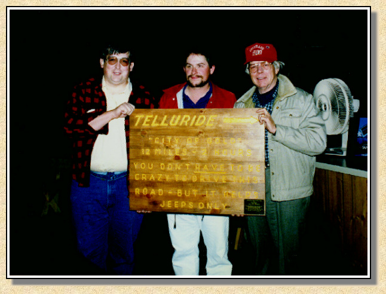

|
Howdy. My name's Miles. I'm an engineer by trade (no, not of the locomotive type, unfortunately), and a certifiable nut for Jeep trails, old mines, ghost towns, and smoking, hissing, narrow gauge trains. This is my story of how I discovered one of the most beautiful places on earth, thanks to a guy named C. W. McCall. It's also the story of how and why this page your reading right now came to be.
It was 1975. I lived in upstate New York. My buddy Tom and I were working for his Dad, doing maintenance on property that he managed. Tom was into Gordon Lightfoot, and this guy named C. W. McCall. He had this 8-track boom box and a mess of tapes that we took out on the job. Well after two summers of puttin' up new ceilings, rebuildin' bathrooms, and paintin' houses, we knew every C. W. song by heart. We were just crazy high school kids, but something in the music had touched us. Sure there were the funny songs like Wolf Creek Pass, Black Bear Road, and Crispy Critters, but there were also the songs like Little Brown Sparrow, Aurora Borealis, and Mountains On My Mind, that expressed a true depth of feeling that seemed to be missing in popular music. The songs about Colorado intrigued us, and one day we got out the good old Rand McNally Road Atlas and started checking it out. There was Ouray, and Silverton, and Telluride. We found Wolf Creek Pass, and downtown Pagosa Springs. It would be nearly ten years before we saw these places, but we were determined to get there someday. Someday turned out to be early September, 1985. Tom was working in Connecticut, and I was in Virginia. Tom had been on a whirlwind tour around the country the year before, and had spent a couple of days in the Silverton area. He got bit by the 4-wheel drive bug (which has a very potent bite, for which there is no known cure except regular doses of The High Country) and had bought himself a 4-Runner. Well we planned it all out. He drove down, and we loaded up all our assorted campin' gear into the back of that truck, shoved a C. W. tape into the stereo, and hit the superslab. I was like a little kid with the soup plate sized eyes all the way across the country. I had never been west before, and was takin' it all in. We took turns driving, and made it 2000 miles in 4 days. We came over Wolf Creek Pass to Durango, and took up residence at a campground north of town. The tracks of the Silverton weren't even 50 feet from our tent. After riding the train, we headed up to Silverton, and pitched our tent at the Silverton Lakes Campground. We headed up towards Animas Forks, and went up the Eureka Gulch trail. It wasn't in quite as good shape as it is today, but it was still pretty tame. Now where we grew up, we had some pretty steep hills and narrow streets, but we scared ourselves silly on that trail. Later that night as we sat and ate our atomic chili, and put out the fire with Colorado Kool-Aid (aka Coors Extra Gold), we decided it wasn't really all that bad, and decided to go find something even more heinous. The next day turned out rainy, so we were doin' some laundry when this thunderstorm from H-E-Doubledrumsticks parked over Silverton, and cut loose. When it was over, our tent was flat, and everything we had with us was soaking wet. Silverton didn't boast much in the way of motels, so we headed up into the coal black night, over Red Mountain Pass to Ouray, to try and find a warm room and a hot shower. We got what I swear was the last room in town. The next morning dawned sunny and beautiful. I was immediately struck by the old time charm of the town. After a good hearty breakfast at the Silver Nugget Café, we headed up into Yankee Boy Basin, and found a nice place to stop for lunch, dry out the tent and sleeping bags, and just soak in the majesty of the mountains. When we got back, we set up camp at the KOA, and decided to check out the Hot Springs Pool. Lounging in that hot water, lookin' up as the last sunlight disappeared from the peak of Mt. Abrams, was a moment of pure heaven. I don't remember how we heard about the Odyssey, but we did. Well we got there and worked our way along in line, up the stairs, and got our tickets. We got seats, and then it happened. OHMYGAWD... It's Him! It's C. W. McCall! We had no idea that he introduced the Odyssey each night. When I heard the music to Aurora Borealis start... here I was finally seeing C. W. live, and he was going to perform my absolute favorite song! Then came the Odyssey. I sat transfixed, staring wide eyed at images of the most incredible beauty I had ever seen. After the show we got to meet Bill, and tell him the whole story of the 8-tracks, and the road atlas. I was amazed at the way you felt like you had known him for years, after just a few words. We had a couple more days before we had to head back east, so we decided to check out some of the JEEP trails. I don't recall which ones we did with the 'Runner, but we did rent a JEEP (from whom I'm not saying) and went off to see what all the fuss over the Black Bear Road was about. Well we found out. We spent so much of the trip being either overwhelmed by the view, or scared to death by the trail, that I took darned few pictures. After the Bear we tried going back by way of Imogene, but found it blocked by snow just east of the summit. So back down we went, and went off to find Ophir Pass. All good things come to an end, and sadly we finally had to leave. The words to Rocky Mountain September were running through my head as we drove out of town. But I was hooked. Next year, I had a brand new Nikon, and a brand new 4-Runner of my own. Tom and I convoyed out, and settled in at the KOA. We spent 16 days getting to know the mountains, finding many of the "soft quiet places" that Bill spoke of in the Odyssey. I shot enough slides to keep Kodak in business for the year, single handed. Tom and I had wanted to do something for Bill to say thanks for all those wonderful songs that had ultimately led us to Ouray. We settled on a quarter size replica of the original Black Bear Road sign, which we had found attached to the front of a local business. Bill kept the replica sign at the Odyssey for years, until he retired from hosting it each night, and took it home. The plaque reads "Presented to C. W. McCall and The San Juan Odyssey - For songs that made us laugh, and songs that made us cry, but most of all for the songs that led us to this beautiful place which we have come to love as much as he does, we will always be grateful - Two Yankee Boys". That night after the show, and giving Bill the sign, we headed up to the Amphitheater overlook to just take in the view, and there, in the northern sky, up the canyon we saw it... Aurora Borealis. It was an incredibly powerful experience that I will never forget. |

|
I've been back to Ouray as often as I can... not nearly as often as I'd like. And I still try to keep Kodak going every time I'm there. Over the years I built up quite a collection of photos. Nowhere near the 30,000 that Bill and his sons took, but over a thousand for certain.
In 1992 I met Jerry Clark through work. We discovered that we were both interested in the narrow gauge railroads of Colorado. Jerry was into modeling in Hon3. I told him I knew where to find the real thing. He said "let's go!" In 1995 Jerry and his wife Jane, and my wife Laura and I took up residence at the Alpenglow Condos for 4th of July week. A week later, when it was time to leave, it was obvious that Jerry was hooked, just like I had been. We went back the next year for another week, and did more 4-wheelin' and feroequinological exploration. We hit the aspens at their peak, and once again assured a nice dividend for Kodak's stockholders. Not long after, both Jerry and I got Internet, and Jerry ran across Mark Evan's Narrow Gauge Circle website. Jerry and Mark got to talking and soon Jerry was sending slides to Mark, to scan and put up on the site. Then I got involved, and buried Mark under an avalanche of slides from my collection. We all got into writing trail narratives, and I got a scanner of my own. Another 100+ pictures for the site. Along the way I discovered that Mark was a C. W. McCall fan. And so it all sort of fell together. We had tons of great pictures to share. We realized that we were trying to do the same thing with the 4x4 Adventures pages that Bill had done with Odyssey. We wanted to share the beauty of Ouray and the San Juans with the world. But none of this would have been possible without Bill's music, so we set about creating a set of pages to tell the story behind C. W. McCall and the San Juan Odyssey ...to say thanks. I have many cherished memories of my trips to Ouray. The time I saw the Aurora Borealis from the amphitheater... sitting in a grove of aspen in September with the sun filtering down on me like golden fire... stopping for lunch high up in Arastra Gulch, and hearing the whistle of The Silverton, echoing ghostly up the canyon... standing in the darkness, 3500 feet inside the Bachelor mine, and hearing the water drip... watching golden eagles ride the wind along the face of Brown Mountain... laying out under the stars in Minehaha Basin, falling out into the night... Thanks Bill, for helping me understand about life, and memories, and starlight. |

This Web page is hosted by: Mark L. Evans
Written and maintained by: Miles A. Lumbard
Send Comments to:Miles A. Lumbard